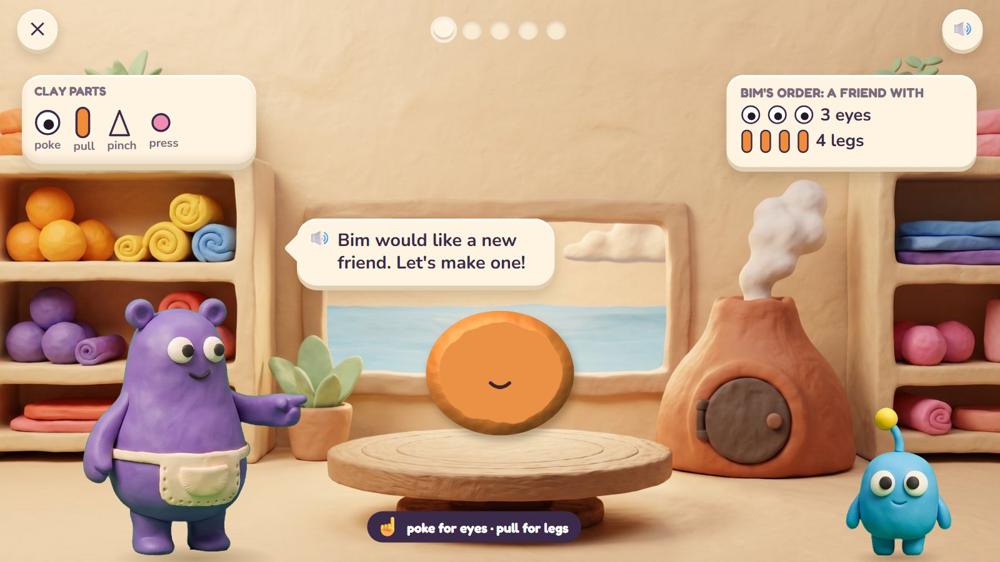
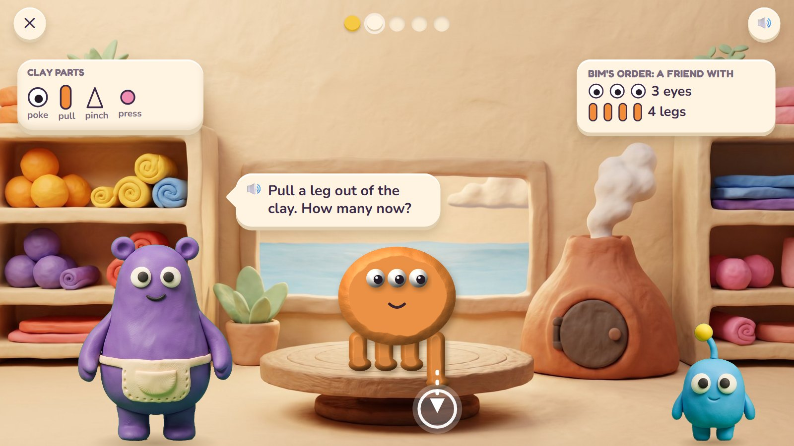
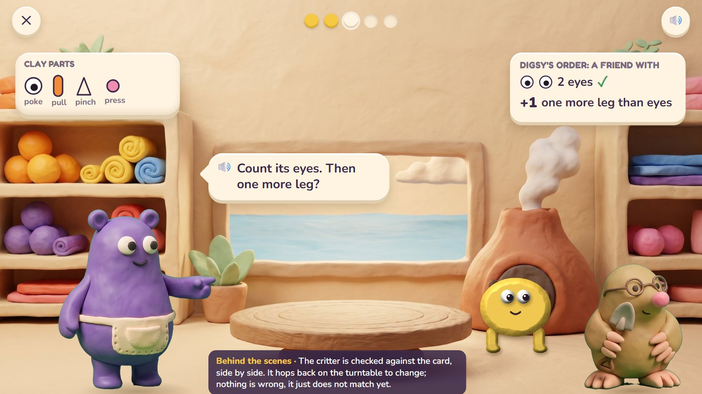
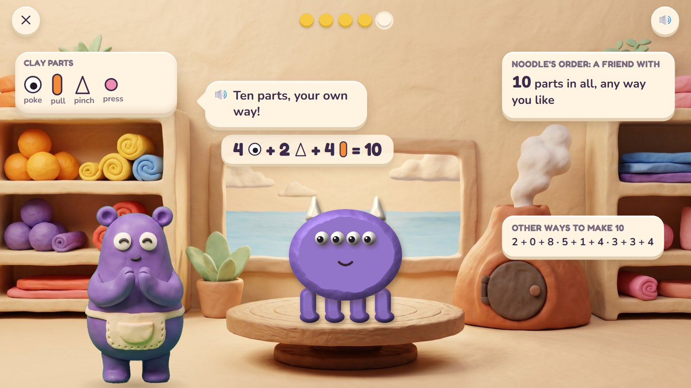
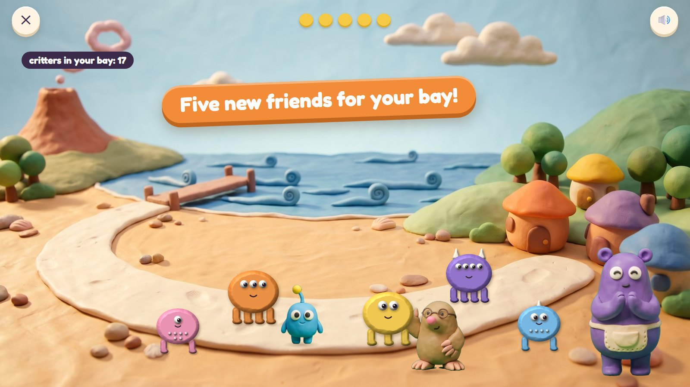

Critter Maker
Critters come to Mumba's workshop with an order card for a new friend. The child builds it from clay: poke in eyes, pull out legs, pinch up horns, press on spots. Then into the little volcano oven it goes, and out it walks, alive. The customer checks the new friend against the card, part by part. Every critter made moves into the child's bay.
K–Grade 1 · ages 5–7 host: Mumba move: poke, pull, pinch, press
The maths: Count parts; one more and one fewer; doubles; add three small numbers; open orders with many right answers. One activity is five rounds, about two minutes. With one finger: tap a part in the tray, tap the body to place it.
🎉 The fun
Building a creature; the oven's puff of smoke; your own critter waking up and walking out.
🎥 The view
Fixed in the workshop; the finale opens onto the beach.
🎆 The finale
The new critters walk out to the beach with their friends (3 seconds) and move into your bay.
Six moments

1An order
Bim wants a new friend with 3 eyes and 4 legs (the card shows them as pictures too). A plain lump of orange clay sits on Mumba's turntable.
🔊 Bim would like a new friend. Let's make one!
The parts tray says how: poke for eyes, pull for legs, pinch for horns, press for spots.

2Poke and pull
Three eyes poked in. The child pulls the fourth leg out of the clay.
🔊 Pull a leg out of the clay. How many now?
A tap on a part takes it back off. The order card stays in view the whole time.

3It's alive!
Into the little volcano oven, a puff of pink smoke, and the new critter walks out, looking at Bim. Bim checks it against the card.
🔊 It matches my card!
The customer checks part by part and ticks the card.

4A wrong try
Digsy wants one more leg than eyes. The critter came out with 2 eyes and 2 legs. Digsy holds his card beside it.
🔊 Count its eyes. Then one more leg?
Nothing is wrong; it just does not match yet. The critter hops back on the turntable to change.

5Ten parts, your way
An open order: any critter with 10 parts in all. The child made 4 eyes, 2 horns and 4 legs; Mumba writes the recipe as a sum.
🔊 Ten parts, your own way!
Many right answers. The sum is written from what the child made; other children's ways are shown too.

6Into the bay
The five new critters walk out to the beach with their friends and move into the child's bay.
🔊 Five new friends for your bay!
Each critter is kept as a tiny recipe (body, colour, parts), so a bay can hold hundreds.
Mock-ups: Gemini's clay pictures (scenes, friends, props) with the maths drawn by code in the same clay look, the way the app would draw it, so every count and size is exact.
What is asked, for one age
- 3 eyes and 4 legs
- One more leg than eyes (2 eyes, so 3 legs)
- Double Pom's 4 spots (8)
- 2 horns, 3 legs and 4 spots: how many parts in all? (9)
- Any critter with 10 parts in all
One activity card. The same activity serves other ages with other numbers:
| Age | What changes |
|---|---|
| 5 | Counting to 10; one more and one fewer. |
| 6 | Doubles; adding three small numbers; open orders to 10. |
| 7 | To 20; "two critters with 4 legs each: how many legs?" (equal groups); fewer than. |
Wrong answers we expect, and what happens
| Mistake | Looks like | What happens (never red, never "wrong") |
|---|---|---|
| Miscounting parts | 4 eyes for 3 | parts light up one by one as the customer counts |
| "One more" read as "one" | 1 leg for "one more leg than eyes" | Digsy: "Count the eyes first. Now one more?" |
| Doubling as adding 2 | 6 spots for "double 4" | Mumba lays the 4 spots twice, side by side |
| A part, not the total | says 4 for "how many parts in all?" | each kind of part is counted, then all together |
What it needs
- The workshop with its oven, drawn once
- The critter's body and parts drawn by code in the clay look (exact counts)
- Mumba and the customers (cut-outs)
- Voice: orders, counting, four tips, praise
Test robot: Reads the card, adds exactly those parts, presses the oven and checks the result. Once a session it adds one leg too few.
One question
← Back to Clay Bay · Poke Pals · Pull-a-Shape · Critter Maker · Seesaw Twins · Parade Squares · Fair Slices · Zoom Dig